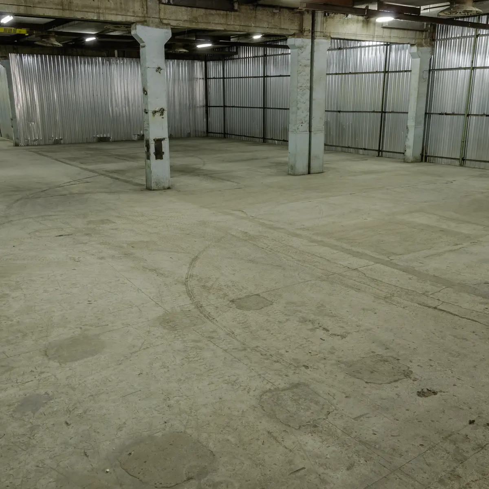
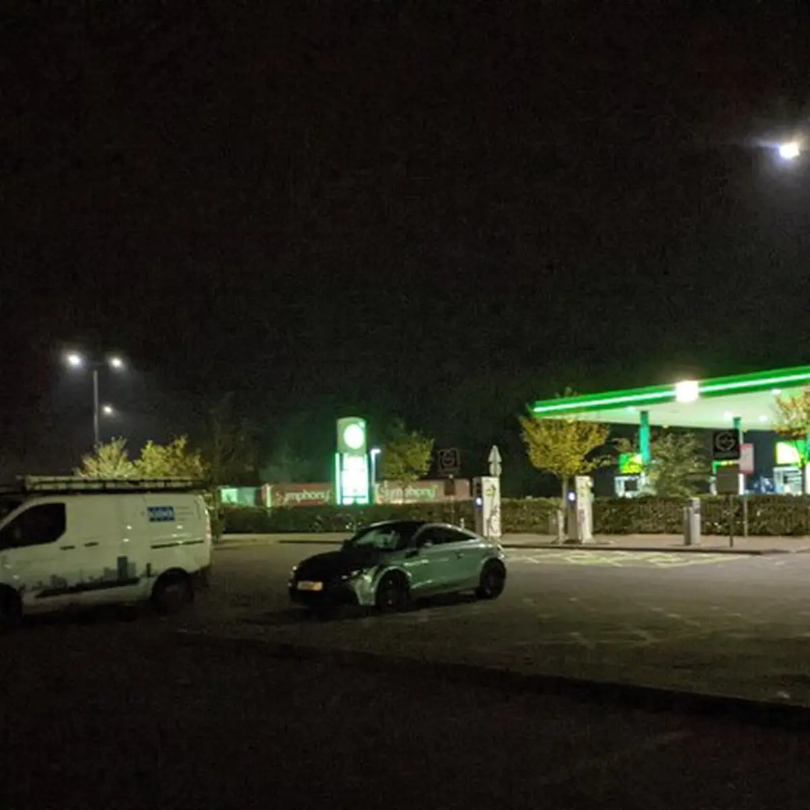

.png){kind=link}
SHEFFIELDOct 17, 2026
Still Looking for the Warehouse
In Pursuit of Repetitive Beats puts you in a car, a service station and a 1989 acid house chase at Sensoria in Sheffield, the same week Amsterdam Dance Event turns 30.
Ask anyone who went out in the acid house years what they remember, and most of them will not start with the dancefloor. They start with the getting there. The phone number on the flyer, the meeting point, the convoy, the hours in a car with a pirate station crackling in and out while somebody in the passenger seat did their eyeliner by the glow of the dashboard. The party was the destination, but the hunt was the ritual.
That is the part a new virtual reality piece has chosen to rebuild. In Pursuit of Repetitive Beats runs at Sensoria, Sheffield's festival of music, film and digital, from Thursday 22 to Sunday 25 October, set up in the Cole Store, the former John Lewis building on Barker's Pool. The festival describes it as an interactive experience that "drops you into the acid house rave scene of 1989," where you are chasing down an illegal all-night warehouse party, "caught between promoters, pirate radio, the police and the crowd."
You are not watching it
The pitch is simple and a little cheeky. "You don't watch Beats, you're in it," the listing says. It is room-scale VR, which means you are on your feet, walking through the night rather than sitting in front of it: the car, the motorway service station, and finally the rave. Along the way the piece moves through the people who made the era, promoters, police, pirate radio stations and ravers, and the relationships between them that pushed a culture into the open.
The credits are worth getting right, because there is an easy mistake waiting here. The piece is written and directed by Darren Emerson, the immersive artist who co-founded the London studio East City Films, not the Underworld DJ who shares his name. It is not brand new, either. According to East City Films, it launched in 2022 with a six-week sold-out run at Coventry City of Culture, won the Immersive Non-Fiction award at IDFA DocLab and Best Location-Based Entertainment at the VR Awards 2023, and has been touring ever since. Sheffield is the latest stop on a long night out.
The soundtrack is named, and it is the right one. Orbital's "Chime" and Joey Beltram's "Energy Flash" play through what Sensoria calls "a meticulously built world." If those two records do not raise the hair on your arms, you were never in the queue. The aim, in the festival's words, is to land "somewhere between a memory and the real thing."
The logistics were the romance
What makes this subject so rich for a headset is that the illegal party of 1989 was, at heart, a logistics problem dressed up as a miracle. A crowd needed to find a building that the police could not, at a time nobody would say out loud, guided by a voice on a station that might be shut down by morning. The service station was a real landmark of that world, a fluorescent waiting room where strangers in baggy fits and too-big jackets recognised each other by the look in their eyes and the cassette in the deck. You can feel why a creator would want you standing in that car park, phone number in hand, rather than already on the floor.


Room-scale VR suits that, because it is about movement and doubt. The party is not promised. You have to go and find it, and the not knowing is the point. The best of the old nights were built on exactly that tension, and the music hit harder because you had earned the room.
It is also a strange, lovely way to think about nostalgia. Most rave history arrives as images behind glass: flyers in frames, grainy photos, documentary talking heads. This asks your body to remember instead. Your feet know the shuffle toward a door you are not sure is the right one. Your shoulders know what it feels like when the bass finally comes through a wall. It is nostalgia as muscle memory, and that is a different thing from reminiscing. Even if you were born decades after 1989, the ritual is familiar, because every good afters still runs on a group chat, a pin drop and a little faith.
Same week, other city
The timing adds a quiet irony. While Sheffield is sending small groups off to chase an illegal warehouse in a headset, Amsterdam Dance Event celebrates its 30th edition from 21 to 25 October. ADE says it grew from 300 professional delegates and three nighttime venues in 1996 into a gathering with more than 3,600 artists across more than 300 venues this year. Its conference even includes a session called "Why Humans Still Need Dancefloors?", with Eris Drew, Alice O'Grady and Sven Bijma of Club RAUM.
Put the two side by side and you get the whole arc of the culture in one week. One city celebrates how vast and official dance music became. Another builds a room where you can feel, for half an hour or so, what it was like when none of it was official at all, when the dancefloor was something you had to find, and keep finding, and protect.
If you go
Slots run from late morning each day, with up to four people per booking, and the experience lasts around 35 to 40 minutes, so bring your crew and decide who gets the passenger seat. Book ahead through the festival. There are standing and seated versions, and the venue is wheelchair accessible by arrangement with Sensoria. Expect flashing lights and loud music throughout. It is open to ages 14 and up, with under-18s accompanied by an adult, though the festival says it suits over-18s better. There are no toilets on site, so plan like it is 1989 and you are about to spend a long time in a car.
Wear something you can move in. Put the compact in a pocket. Then go looking for the warehouse, one more time.
Sources
- Sensoria, In Pursuit of Repetitive Beats: https://www.sensoria.org.uk/events/in-pursuit-of-repetitive-beats/
- Sensoria, Events: https://www.sensoria.org.uk/events/
- Exposed Magazine, Perko's guide to Sensoria: https://www.exposedmagazine.co.uk/whats-new/perkos-guide-to-this-years-sensoria-festival/
- East City Films, In Pursuit of Repetitive Beats: https://eastcityfilms.com/inpursuitofrepetitivebeats/
- East City Films, Darren Emerson: https://eastcityfilms.com/team/darren-emerson/
- EventsList, In Pursuit of Repetitive Beats: https://eventslist.co.uk/sheffield/events/in-pursuit-of-repetitive-beats-2026-10-22
- ADE, 30 YEARS ADE dates announcement: https://www.amsterdam-dance-event.nl/en/news/ade25-pressrelease-5/2750267/
- ADE, 30 YEARS ADE full program: https://www.amsterdam-dance-event.nl/en/news/amsterdam-dance-event-completes-program-for-landmark-30-years-ade-with-3-600-artists/2930003/